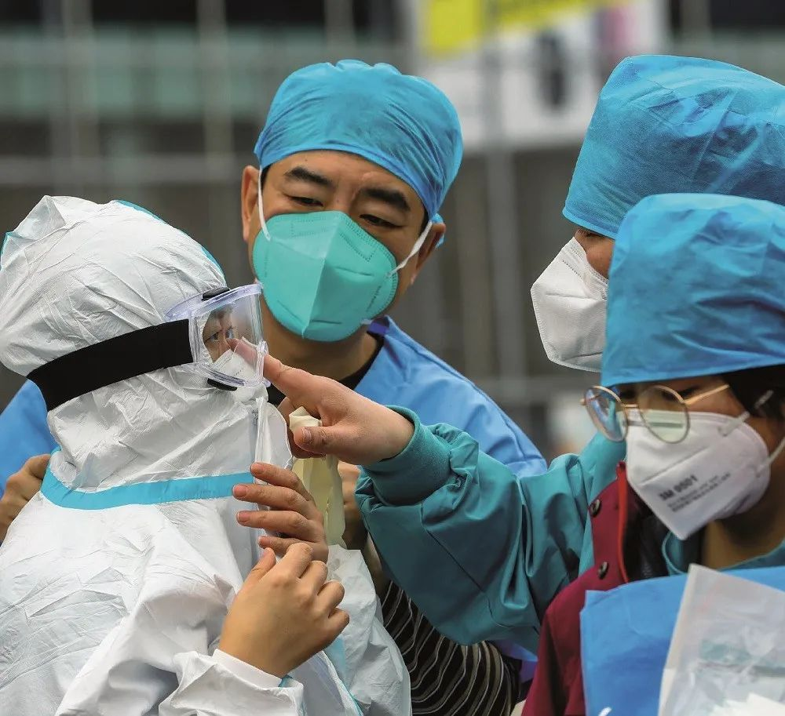

在线医疗，“爆发元年”还是“昙花一现”？
原文链接 备份链接 国内疫情形势逐渐好转，在线医疗机构们到底能否经受住“后疫情时代”的挑战？ 文 | 徐徜徉 编辑 | 朱弢 空格 2020年初，一场新冠肺炎疫情将医疗行业推向了“风口浪尖”。 在湖北及全国各地的医院内，数万名医务人员奋战 …

受疫情期间影响，多地医保快速开通互联网医疗支付业务，但这距离行业的春天或许还远，长期的“医保份额”划定仍是瓶颈，找到其他的买单方也在探索期

文 |《财经》记者 辛颖 俞燕
编辑 | 王小
“我印象最深的线上问诊的提问是，如果家里飞进来一只蝙蝠怎么办？”
一位武汉市协和医院医生在线问诊遇到这个问题。他和他的同行们，在武汉医护资源最紧张的时刻，将战场搬到了互联网上。
1月22日，武汉封城前夜，新冠肺炎定点医院和发热门诊医院已有大量患者排队等候诊治。“大家都太紧张了，小感冒都往医院跑。而且患者在发现家附近的医院不能就诊，就流动去下一家医院。”上述武汉协和医院医生对《财经》记者说，不幸的是在1月23日一早，收到医院通知，要求他在家隔离，“前几天一起吃过饭的同事被确诊感染了”。
一边是医生难全员到位，一边是大量患者拥堵在医院，于是，武汉协和医院号召有时间的医生，在“掌上协和”APP上提供问诊服务，且不做严格的科室划分，每个医生都发挥全科医生的职能。
上述武汉协和医生此前曾在全国互联网平台提供线上问诊业务两年，这次却是他第一次使用自己医院的线上APP，“我需要去医院吗？”这是他需要回答最多的问题。而对诊疗建议，他也有颇多无奈，“如果是发热患者在38.5度以下，都建议服药，在家隔离。去医院会增加交叉感染风险，在家也有家庭感染风险，但这在当时确实是没办法的办法”。
每天早上8点半，打开手机提供问诊服务，这位武汉协和医生一天在线上可以接待约70名患者。这和他在医院出门诊的效率差不多。但是，彼时“掌上协和”APP还不具备开处方等功能。他会根据国家新冠肺炎诊疗方案，给患者推荐抗病毒口服药等，让患者自行购买，“但那时已经有部分患者反馈买不到药”。
不仅在武汉，春节后第一周，也是全国线上问诊爆发的一周。“从没有过如此高的单日问诊量，系统经受了前所未有的考验。”微医高级副总裁程怡对《财经》记者说。
此时，在线咨询最核心的需求，是那些有发热、咳嗽都相关症状，但是不敢去医院的人。“不少咨询者身处疫区，不敢上医院或者是太恐慌。”北京军区总医院原副主任医师桂红珍说，她曾参加过小汤山抗击SARS（非典型肺炎）工作，她介绍，其中有人在线咨询过程中，已经明显出现了新冠肺炎的症状，但不愿意去医院，担心大家用异样的眼光看他，“我们一方面帮他联系当地医院，一方面进行劝导”。
平安好医生后台数据显示，线上问诊最关心的问题，就是如何辨别、预防这种新型冠状病毒。其中，40%的人关心如何预防冠状病毒感染；25%的人咨询，如果出现发热、干咳、乏力等症状，是否意味着已经感染新冠状病毒；10%的人询问新型冠状病毒的传播方式。
随着疫情发展，武汉市的就医压力逐渐转向因社区封闭在家的普通居民。互联网+医疗的优势，在这一特殊时期凸显。
微医、平安好医生等平台都上线了疫情问诊专区，免费为患者提供新冠肺炎咨询。疫情期间，微医疫情专区在最高峰单日访问量翻10倍，平安好医生APP新注册用户量增长10倍，日均问诊量是平时的9倍。
3月5日，酝酿已久的《关于深化医疗保障制度改革的意见》（下称《意见》）正式出台，这一重磅文件对互联网+医疗业务明确指出，要从医保基金预算管理、医保定点机构选择上适应互联网+医疗服务模式的发展需求，同时加以规范。
或许可借疫情契机，将在互联网医院问诊纳入医保支付推广开来。
在线上买到药，从来不容易
“我在网上成功下单买到药。”3月2日晚8点，72岁的武汉市民任毅（化名）使用手机买到自己的救命药，这也是国家医保电子凭证在武汉紧急上线的第一天。
国家医保电子凭证在武汉上线，也是应对武汉疫情需求，打通线上问诊、处方流转、线下送药、医保报销全流程的最后一环。
2月24日，高血压、糖尿病等10类重症慢病患者，可以用医保卡在线问诊三家公立医院——武汉协和医院、武汉大学人民医院和武汉市中心医院。2月26日，又增添一家平台型的微医互联网总医院。武汉市医保局为这四家在线诊疗直接医保结算。
“如果不是疫情的特殊环境，医保打通互联网医疗的政策铺开不会这么快。”南开大学卫生经济与医疗保障研究中心主任朱铭来对《财经》记者分析。
任毅因心脏支架手术，需长期服用阿托伐他汀。疫情暴发后，武汉市内交通暂停、小区实行全封闭管理，任毅的子女也无法帮忙，他得自己想法买药。
社区工作人员曾派车送任毅去医院取药，但就诊医院已成为新冠肺炎定点医院，普通门诊暂停，而且去医院，也担心会增加感染风险。社区工作人员也可以帮助去药店购买，但实在忙不过来，有时还会发生误漏。
任毅的困境，也是武汉近40万重症慢病患者正面临的。
任毅第一次自己在微医平台操作线上购药时失败了，因为要人脸识别，操作不能由子女代为执行，即使常用智能手机，上传病例信息等操作，对一位72岁的老人来说也并不容易。最终在客服人员的帮助下，任毅第二次操作成功下单。
武汉微医互联网医院在上线第1天就开出了近两万单处方，线下审核压力巨大。因为，持社保卡的患者在线上购药，和医保系统并未打通，线上买药系统不能自动将患者的个人信息和医保账户对接，需要人工审核，这一审核过程平均每位患者需5—7分钟左右。
最终，国家医保局出手，连夜指导武汉完成国家医保电子凭证系统的对接，正式上线，打通数据，通过人脸识别等方式验证身份，从而减少部分医保线下核验流程，提升整体效率。
“其实打破人们对互联网医疗的认知壁垒是最难的，既包括普通患者和医生的认知，也包括政策制定者的认知，疫情是一次机会。”一位资深互联网医疗人士对《财经》记者分析，如银川市，此前曾为互联网医院开通医保支付，可使用医保个人账户和医院的门诊统筹账户报销，但是由于用户习惯、报销比例、操作流程等问题，并没有因此产生超规模的用户增长。
在医院购药可走医保统筹账户报销，是很多患者倾向去医院购药的原因之一。据《湖北日报》报道，武汉市中心医院在开通线上医保支付前，在线每天只有十几单购送药业务。在2月24日纳入医保当天，线上处方购药送药就完成了50单。
线上平台可实施24小接诊。“一位在非洲支援的医生上线后对我们说，我们有时差，刚好可以跟国内的医生形成接力。”程怡介绍，微医的“新冠肺炎实时救助平台”上线之初，只有1500名呼吸科等专科医生，后经招募和卫健委号召，到目前已经增至4万余名医生参与其中。
这既是政策的突破，也是对互联网诊疗的全面大考。
在线问诊平台在武汉疫情中能够发力，有赖于医保部门的报销支持。“微医首期与8家有医保定点资质的（武汉）药店线下合作，处方流转、药品供应，医保支付走统筹账户报销。”程怡介绍。
武汉协和医院的APP后续也开通了在线处方，纳入医保等功能也在逐步完善。
武汉之外，一位正在同地方医保局对接的互联网医院人士告诉《财经》，虽然各方都在加速，但从获得互联网医院牌照，到完成医保支付的线上系统对接，目前看仍需要近两个月的时间。
医保份额留给谁？
上述武汉协和医生已经停止了在线问诊业务，他发现“有效”问题明显减少。随着武汉当地紧急建设医院、隔离点，以及全国各地医生驰援，医疗资源紧张的问题得到缓解后，来线上咨询疑似症状的人锐减。这说明情况不再紧张，时间要留给更多真正有需要的患者。
这也是此前，这位武汉协和医生使用互联网问诊平台两年后，最终停止的原因，在线上他遇到自己专业对口的患者越来越少。
疫情结束后，就会回归行业发展的真实状态。朱铭来认为，互联网医疗毕竟是新开辟的一条路，虽能通过新的服务带来便捷，比如配送药品上门，但是谁来为快递费埋单，如何消化新增的价值是行业立足长久发展的关键。
作为中国医药市场最大的埋单方，此次医保大踏步入场互联网医疗让众人充满期待。但在医保控费的整体大环境下，互联网医院能在医保总盘获得中多少份额？
上述互联网医疗资深人士分析，对于互联网医院报销，如果医保放开个人账户，是在挤占药店的市场，如果是走用于门诊、住院报销的医保统筹账户，则是占用医院总额预付的额度。“在疫情时期是没问题，但是在这之后，医院要考虑自己的线下手术、住院等业务，肯定会对线上额度做平衡”。
医保也在提升资金统筹层次，但目前仍是地市级统筹，放开多少份额受地方决策影响。而地方的决策者对此也确实有所迟疑。
一位辽宁省地方医保局工作人员向《财经》记者分析，将互联网医疗纳入医保，是供给侧改革，但是能解决多少患者需求是他更关心的。
“我所在的辖区每隔100米就有一个药店，基本都是医保定点药店，春节期间不休息，即使在疫情期间，居民买药都没有受到影响。当地确实开通了几家互联网医院，但是知道的市民很少，有使用需求的更少。而且线上诊疗服务的标准、规范、定价都不明确，这也是我们迟疑的原因之一。”上述地方医保局工作人员分析。
”朱铭来也认为，如果基层医疗服务体系发展完善，居民出门就能便捷地解决就医需求，“说实话，我认为互联网医疗没有什么发展机会”。
而现实中患者不断向三甲医院聚集，就医成本越来越高。分级诊疗在基层的薄弱之处，是朱铭来眼中互联网医院真正的发展空间，它能够通过协调线上资源，来弥补线下就医资源的不足，也许有一天能够为我们提供健康管理增值服务的家庭医生，就是由我们自己在线上选择的。全方位的线上服务，才能够留住最广大的医生资源。
在目前，多家线上问诊平台仍将自己的下一步的主要业务定位在慢性病、常见病和复诊处方。
“医保不可能承担一切，那么未来消费者的习惯是否会改变，或者商业保险是否愿意为互联网医疗增值服务付费，这需要探索。”朱铭来指出。
全民医疗保障体系应当是多层次的。国家医保局也指出，到2030年，要建成以基本医疗保险为主体，医疗救助为托底，补充医疗保险、商业健康保险、慈善捐赠、医疗互助共同发展的多层次医疗保障制度体系。
商业保险已经在探路。众安保险在2019年7月获得互联网医院牌照，同年12月下旬正式上线。通过连接互联网保险与互联网医院的相关业务，众安在内部形成医疗服务闭环。
当公立医院和平台型互联网企业同时站在互联网医院的赛道上，“真正拼的是服务”，多位业内人士向《财经》记者指出，互联网医疗真正的优势在于线上运营能力，而公立医院尤其是三级医院的线下业务已经“人满为患”，其在线上的投入并不可观，长期竞争力仍有限。
程怡虽然对进入常态化的互联网医疗更抱有信心，但她也很清楚，只有医、检、药、保、数据全部打通，互联网医疗的价值才能充分体现，才有可能把业务从线下迁移到线上。

▲点击图片查看更多疫情报道
责编 | 黄端 duanhuang@caijing.com.cn
本文为《财经》杂志原创文章，未经授权不得转载或建立镜像。如需转载，请在文末留言申请并获取授权。
原文链接 备份链接 国内疫情形势逐渐好转，在线医疗机构们到底能否经受住“后疫情时代”的挑战？ 文 | 徐徜徉 编辑 | 朱弢 空格 2020年初，一场新冠肺炎疫情将医疗行业推向了“风口浪尖”。 在湖北及全国各地的医院内，数万名医务人员奋战 …
原文链接 备份链接 新冠疫情期间，居家隔离的疑似患者，和非新冠肺炎患者，都需要诊疗服务，但去医院有交叉感染风险。 于是在线问诊需求暴增。好大夫创始人王航估计，目前“线上每天能服务12万人”。 黑龙江、武汉、上海等地多家公立医院迅速开 …
原文链接 备份链接 从线下到线上，从疫情时期到常规医疗，天津“微医模式”或将成为各地参考借鉴的范例。 全文5588字，阅读约需11分钟 从大年初一开始，天津医院感染免疫科副主任刘秀婵有了两个新身份。 穿上防护服戴上口罩，她是支援天津医院 …
原文链接 备份链接 记者/梁婷 实习记者/周缦卿 陈威敬 胡琪琛 编辑/石爱华 宋建华 彭银华在住院期间留下的照片（图片来自人民日报） 如果没有疫情，彭银华会是一位幸福的新郎，一个准备迎接新生命的父亲。 29岁的彭银华去年正式成为江夏区第 …
原文链接 备份链接 疫情危机再一次提醒我们，在公共卫生方面，从政府、社会到公众，我们还有很多功课未能完成。 作者 | 朱纪明 程峰（清华大学医学院公共健康研究中心） 编辑 | 徐菁菁 药物和疫苗不一定“特效” 身在疫情中，大众的期待是特效 …